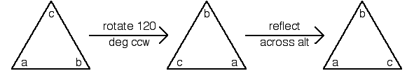

| The order in which elements of a cyclic group are added is irrelevant: |
| However, for symmetry groups that include rotations and reflections, the order of the operations can matter. |
| For example, label the vertices of an equilateral triangle, so we can keep track of the positions of the vertices. |
| Consider the symmetry operations rotate |
|  |
| Certainly, the order of the transformations has an effect on the outcome. |
| So in general, we must consider groups in which the order of the operations can
matter: |
Return to Some group theory.